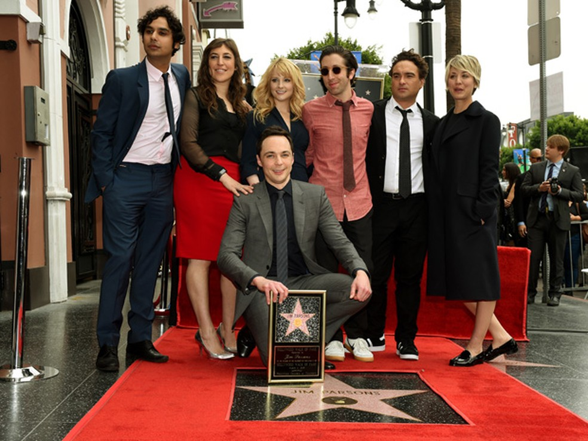

The big bang theory, é uma sitcon americana que foi criada por Chuck Lorre e Bill Prady, também produtores executivos da série ao lado de Steve Molaro. A série estreou pela rede CBS no dia 24 de setembro de 2007 e foi encerrada, após 12 temporadas, em maio de 2019.

The big bang theory foi indicada ao Emmy de Melhor Comédia de 2011 a 2014 e rendeu ao ator Jim Parsons quatro prêmios Emmy de Melhor Ator em Série de Comédia, além de um troféu Globo de Ouro (em 2011) pela sua interpretação como Sheldon Cooper.
| Jim Parsons e os colegas de trabalho. na sua estrela,na Hollywood Walk of Fame | Elenco em uma premiação |
|---|---|
|  |